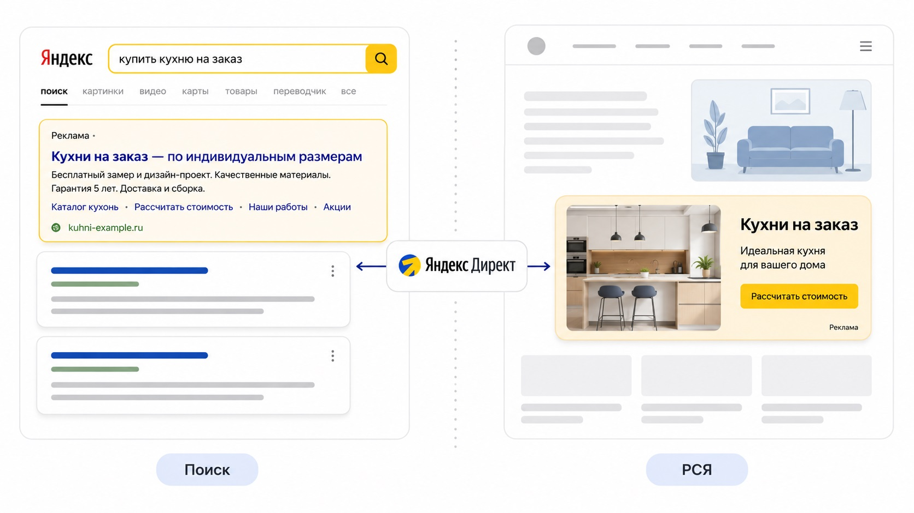

Блог о платном трафике
Как работает Яндекс Директ: простое объяснение для новичков
Со стороны все выглядит просто: человек ищет кухню на заказ, видит объявление, переходит на сайт и оставляет заявку. Внутри в этот момент работает целая система показа рекламы.
Что такое Яндекс Директ
Яндекс Директ - это рекламный сервис Яндекса. Через него бизнес платно показывает свои объявления людям, которые могут стать покупателями. Вы задаете, что рекламируете и кому это нужно показать, а Яндекс подбирает подходящие моменты для показа.
Дальше по тексту будет один сквозной пример: компания делает кухни на заказ. Ей нужны заявки на бесплатный замер, а не посещения сайта.
У рекламы в Директе есть две основные среды показа. Первая - Поиск, где объявления идут рядом с результатами поисковой выдачи. Вторая - РСЯ, рекламная сеть Яндекса: объявления показываются на сайтах-партнерах, в сервисах и приложениях. Именно это различие новичку стоит понять в первую очередь, все остальные настройки надстраиваются сверху.

Как работает реклама на Поиске Яндекса
Здесь первый шаг делает сам человек. Он открывает Яндекс и пишет запрос: «купить кухню на заказ», «кухни на заказ недорого», «кухня по индивидуальным размерам».
Яндекс смотрит, какие рекламодатели готовы показаться по такому запросу, и отбирает подходящие объявления. Учитывается готовность платить, соответствие объявления запросу и то, насколько оно интересно людям. В подробности отбора новичку погружаться рано.
Отобранные объявления встают рядом с обычными результатами поиска и помечаются словом «Реклама». Человек читает заголовок, видит цену или условия, кликает и попадает на ваш сайт. С этого момента все зависит от страницы, на которую он пришел.
Главная особенность Поиска: спрос уже сформирован. Человек прямо сейчас решает свою задачу, и ваше объявление отвечает на его вопрос.
Как работает РСЯ
РСЯ расшифровывается как рекламная сеть Яндекса. Это тысячи площадок-партнеров: новостные сайты, тематические порталы, сервисы Яндекса, мобильные приложения.
Разница с Поиском в том, кто кого находит. На Поиске человек ищет вас сам. В РСЯ объявление находит человека, пока он занят чем-то другим: читает статью про ремонт, смотрит подборку интерьеров, листает ленту в приложении. Яндекс решает, что этому пользователю уместно показать кухни, по его интересам, недавним запросам и поведению.
Изображения в рекламной сети встречаются чаще всего, но сводить РСЯ только к баннерам неверно. Там работают и текстово-графические объявления, и видео, и товарные форматы. Выбор формата зависит от задачи и от того, что вы продаете.
Поиск и РСЯ: в чем разница
Короткая сводка, чтобы различие осталось в голове.
| Что сравниваем | Поиск | РСЯ |
|---|---|---|
| Спрос | Сформированный: человек уже ищет решение | Более широкая аудитория, спрос может быть только зреющим |
| Что запускает показ | Запрос пользователя | Интересы и другие сигналы аудитории |
| Формат | Поисковое объявление рядом с выдачей | Графические и другие форматы на площадках |
| Чем занят человек | Решает свою задачу прямо сейчас | Читает, смотрит, отвлекается на рекламу |
Отсюда следует практический вывод: одинаковые тексты и одинаковые ожидания по цене заявки в двух средах не работают.
Как работает Яндекс Директ после запуска рекламы
Дальше начинается цепочка, ради которой все и затевалось: пользователь, объявление, сайт, заявка. Каждое звено может сработать или сломаться.
1. Определяем, что рекламируем
Сначала выбираем конкретное предложение. Не «кухни вообще», а бесплатный замер с дизайн-проектом или кухни в конкретном ценовом сегменте. От этого зависит все остальное.
2. Выбираем аудиторию
Задаем географию, а дальше либо ключевые фразы для Поиска, либо интересы и сегменты для рекламной сети. Кухни на заказ в Ростове и в Москве - это разные кампании с разными бюджетами.
3. Создаем объявления
Пишем заголовки и тексты, добавляем изображения, подставляем ссылку на нужную страницу. Объявление должно обещать ровно то, что человек найдет на сайте.
4. Яндекс показывает рекламу
Система подбирает моменты показа и постепенно учится на результатах: какие фразы, площадки и аудитории чаще приводят к нужному действию. Первые дни она работает вслепую, поэтому резкие выводы по одному дню обычно ошибочны.
5. Пользователь переходит на сайт
Клик оплачен, человек на странице. Если он попал на общий каталог вместо страницы про кухни на заказ, деньги уже потрачены, а заявки не будет.
6. Яндекс Метрика фиксирует результат
Яндекс Метрика - бесплатный счетчик посещаемости. Она показывает, откуда пришел человек, что делал на сайте и оставил ли заявку. Действия, которые вам нужны, отмечаются как цели: отправка формы, клик по номеру телефона, переход в мессенджер.
Без Метрики реклама превращается в угадайку. С ней видно, какая фраза или площадка приносит обращения, а какая только тратит бюджет. По этим данным Директ оптимизирует показы дальше.
За что платит рекламодатель
Единой фиксированной цены у рекламы нет. Стоимость зависит от ниши, региона, сезона, конкуренции и качества самих объявлений. Ремонт квартир в Москве и курсы по вязанию в небольшом городе стоят по-разному, и назвать одну цифру для всех невозможно.
Платить можно за клики или за целевые действия - за это отвечает выбранная стратегия. Но для бизнеса важнее другая цифра. Дешевые клики при пустом отделе продаж не значат ничего. Считать нужно стоимость обращения и стоимость продажи: сколько денег ушло на рекламу и сколько клиентов вы из нее получили.
Мастер кампаний и Единая перфоманс-кампания
В интерфейсе Директа есть два основных способа собрать кампанию. Мастер кампаний проще: минимум настроек, подсказки на каждом шаге, часть текстов и изображений система предлагает сама. Это разумная точка входа, если вы запускаете рекламу впервые или проверяете спрос на новую услугу.
Единая перфоманс-кампания, ее часто сокращают до ЕПК, дает больше контроля. Там можно выбрать место показа, собрать несколько групп в одной кампании, тоньше настроить стратегии и таргетинги. Управлять сложнее, зато рычагов в руках заметно больше.
У меня есть кейс с Мастером кампаний для онлайн-курсов по йоге, где простой инструмент отработал лучше ожиданий клиента.
Какие ошибки мешают рекламе работать
Четыре типовые ситуации, из-за которых бюджет уходит впустую.
- Запуск без нормальной аналитики. Метрика не стоит, цели не настроены. Кампания крутится, а понять, что именно принесло заявки, нельзя.
- Весь трафик на одну общую страницу. Человек искал кухню по индивидуальным размерам, а попал на главную с десятью разделами. Он не будет искать нужное сам.
- Оценка по кликам и CTR. Это промежуточные показатели. Рост кликабельности не означает, что заявок стало больше, а тем более что выросли продажи.
- Одинаковый подход к Поиску и РСЯ. Разная аудитория, разное состояние спроса, разные форматы. Ждать от них одинаковой цены заявки бессмысленно.
Можно ли настроить Яндекс Директ самостоятельно
Да. Интерфейс за последние годы сильно упростился, а Мастер кампаний ведет за руку. Собрать первую кампанию и получить первые клики реально без чужой помощи.
Сложности начинаются после запуска. Нужно читать отчеты Метрики, отделять целевые обращения от мусорных, чистить площадки и фразы, переписывать объявления, менять посадочные страницы и следить за стоимостью заявки в динамике. Это регулярная работа, а не разовая настройка.
Я, Максим Мирошников, занимаюсь платным трафиком больше десяти лет и вижу одну и ту же картину: кабинет настроить может почти каждый, а вот довести рекламу до окупаемости получается у тех, кто разбирает всю цепочку целиком - оффер, посадочную страницу, аналитику и продажи. Подробнее об этом в разделе что входит в работу над рекламой.
Кому подходит Яндекс Директ
Директ работает там, где у людей есть понятная потребность и они ее ищут: услуги, B2B и оптовые поставки, недвижимость, онлайн-образование, интернет-магазины, медицина, автосервисы.
Как это выглядит на практике, проще посмотреть на реальных проектах: кейсы по Яндекс Директу в разных нишах собраны на главной странице, от строительства домов до онлайн-курсов и недвижимости.
Частые вопросы
Что такое Яндекс Директ простыми словами?
Сервис платной рекламы Яндекса. Вы платите за то, чтобы ваше объявление увидели люди, которым ваш товар или услуга могут быть нужны.
Чем Поиск отличается от РСЯ?
На Поиске человек сам ищет решение и видит объявление в ответ на свой запрос. В рекламной сети объявление показывается на сторонних площадках по интересам и поведению пользователя.
Сколько стоит реклама в Яндекс Директе?
Фиксированной цены нет. Она складывается из ниши, региона, конкуренции и качества объявлений. Ориентироваться стоит на стоимость заявки и продажи, а не на цену клика.
Что нужно для запуска Яндекс Директа?
Сайт или другая посадочная страница, установленная Яндекс Метрика с настроенными целями, внятное предложение и бюджет на тестовый период.
Что лучше: Яндекс Директ или SEO?
Это разные инструменты по скорости. Директ дает трафик сразу после запуска, но перестает работать, когда заканчивается бюджет. SEO набирает силу месяцами, зато потом работает без оплаты за клики. Часто их используют вместе.
Если оставить в памяти всего два предложения, пусть будут эти. На Поиске реклама отвечает на уже сформированный запрос человека. В рекламной сети она сама находит подходящую аудиторию среди тех, кто пока ничего не ищет.